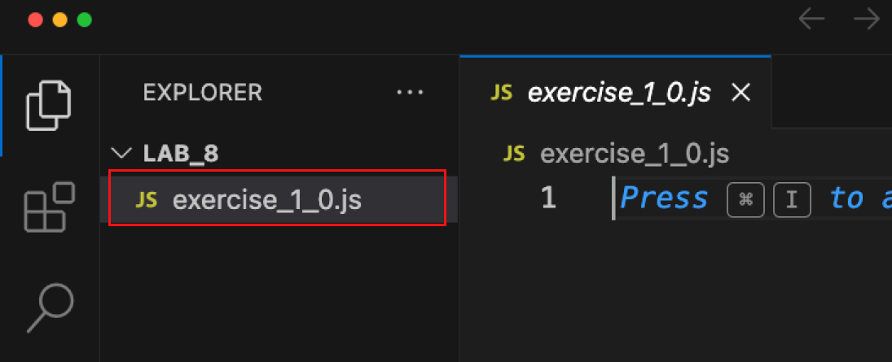
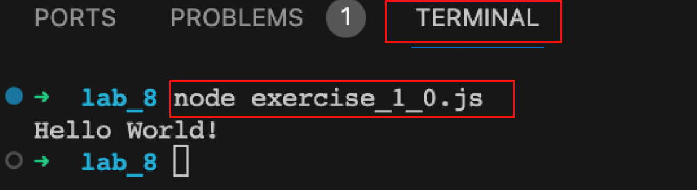

In this lab, you'll learn how to create Node.js applications. You'll learn how to run your programs from the terminal and how to use variables. Further, you'll learn how to control the flow of your program using conditional statements and loops. Finally, you'll learn how to create functions to make your programs more modular.
To complete the lab, work through the exercises below - please attempt them all. If you get stuck, ask your peers, student helper, or lecturer for help.
You should also download the lab notes to help you complete the lab.
The solutions to the lab can be found here. You should, however, ensure that you attempt each exercise before you attempt the solutions.
In this part of the lab, you'll set up your development environment.
In order to complete this lab, you'll need to install Node.js on the lab computer. Node.js is a JavaScript runtime that allows you to run JavaScript code outside of a web browser. You can follow the instructions here to install node on either your own or the lab computer
In this section:
Node.js application.Now we've leveled up our development environment; we can make our first Node.js application.
Let's start the exercise
Further, if you haven't already, open VS Code on your computer. VS code is already installed on the lab computers. If you are using your own computer, you can download VS code here.
Create a folder in your called lab_8. It's worth creating this folder in something like a WEB-AND-DATABASE-SYSTEMS directory.
If you haven't already, open VS Code on your computer.
In the menu at the top of VS Code, click on "file" -> "open folder". Open your lab_8 folder.
You should now see the empty directory structure in the explorer bar of your VS code window. If you can't see the explore bar, press CTRL+b.
Right click on the explorer bar and create the file exercise_1_0.js.

exercise_1_0.js:console.log("Hello World")exercise_1_0.js is saved.terminal -> new terminal.node exercise_1_0.js and press enter. Your program should output "hello world".
That's it! You've created your first Node.js application.
We're going to expand on the first exercise and use variables. Pay close attention on how the + is used to concatenate(join together) text with variables.
Let's start the exercise
exercise_1_1.js, and type in the below code://set up our variables
var yourName;
var yourLocation;
// assign variable
yourName = "Joe";
yourLocation = "Brighton";
// output variable
console.log("your name is: " + yourName);
console.log("your location is: " + yourLocation);
node exercise_1_1.js. You should see your name and location outputted.console.log statement. The output should look like "Hello, Joe, you live in Brighton"In this section you'll explore how you can control the flow of your program using conditional statements and loops. Further, we'll look at how to create functions to make our programs more modular.
In this part of the lab, we'll be using let and const to declare variables, instead of var. let and const are newer ways of declaring variables. They are more flexible and less error prone than var. You can read more about the differences between let, const and var in an article written by freecodecamp (click here).
We'll also be exploring conditional statements and functions. You should refer to the lab notes for guidance on these topics (click here).
In order to code decisions into our JavaScript programs it's necessary to use conditional statements know as if statements.
The aim of this exercise is to create a JavaScript guessing game.
Your program will generate a random number between a user defined range. The user will then make guesses with the aim of finding that number. Feedback will be given on if the guess is:
lets start the exercise
exercise_2_0.js.exercise_2_0.js:const readline = require('node:readline/promises');
The above code imports the readline module and assigns it to the constant readline. This module allows us to read input from the terminal. We'll use this to get input from the user. The require keyword is used to import modules in Node.js.
const secretNumber = Math.floor(Math.random() * 10) + 1;
The above code uses the Math module to generate a random number between 1 and 10. The Math.floor function rounds down to the nearest integer. The Math.random function generates a random number between 0 and 1. We multiply this by 10 to get a number between 0 and 10. Finally, we add 1 to get a number between 1 and 10.
const rl = readline.createInterface({
input: process.stdin,
output: process.stdout
});
If you are interested, the above code creates an interface to read input from the terminal. The rl variable is assigned to the interface. The createInterface function takes an object as an argument. The input property is set to process.stdin which is the standard input stream. The output property is set to process.stdout which is the standard output stream. Again, don't worry too much about this, we won't be reading inputs from the stdin again.
async function guessNumber() {
let guessCount = 0;
while (guessCount < 5) {
// Ask the user for a guess
let answer = await rl.question('Guess a number between 1 and 10: ');
// Convert the answer to a number
let guess = parseInt(answer);
// increment the guess count
guessCount++;
// at this point the user input is stored in guess and the guess count is stored in guessCount
// your code goes here - we'll add this in the next steps
}
console.log('Sorry, you ran out of guesses!', `The secret number was ${secretNumber}`);
rl.close();
}
guessNumber();
As you go along, you should regularly run your program to check that it's working as expected. To run your program, open a VS code terminal session and type node exercise_2_0.js. To exit your program, press Control + c. Give it a go now. You should be prompted to guess a number between 1 and 10, 5 times. After the 5th guess, the program should exit, and you should see the message "Sorry, you ran out of guesses! The secret number was random number".
With in the while loop of your program, can you add an if else statement to check if the user guess is correct. You should consider the following:
console.log("Too small!")console.log("Too large!")console.log("Correct! You win!");
rl.close()
return;
The above task is quite challenging. If you get stuck:
Did you fly through the above exercises? If so, try the following, consider some of the following, optional, improvements:
You can find the solutions to the above exercises by clicking here. Note, I don't provide solutions to the stretch tasks. If you've completed the stretch tasks, well done! You're doing great!
const readline = require('node:readline/promises');
const secretNumber = Math.floor(Math.random() * 10) + 1;
const rl = readline.createInterface({
input: process.stdin,
output: process.stdout
});
async function guessNumber() {
let guessCount = 0;
while (guessCount < 6) {
// Ask the user for a guess
let answer = await rl.question('Guess a number between 1 and 10: ');
// Convert the answer to a number
let guess = parseInt(answer);
// increment the guess count
guessCount++;
// your code goes here
}
console.log('Sorry, you ran out of guesses!', `The secret number was ${secretNumber}`);
rl.close();
}
guessNumber();